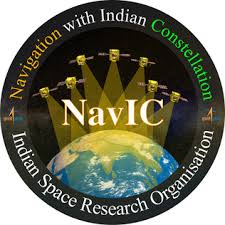
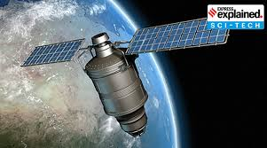

Science
India's Contribution to Satillite Technology:
1. Early Space Missions:
- India launched its first satellite, Aryabhata, in 1975.
2. Satellite Systems:
INSAT
GSAT
IRS
NavIC
3. Interplanetary Exploration:
- India's Mangalyaan (Mars Orbiter Mission) in 2013 and Chandrayaan-1 (Moon mission) in 2008.
4. Commercial Satellite Launches:
- ISRO has become a major player in launching satellites for other countries using PSLV and GSLV rockets.
5. Future Plans:
- Gaganyaan human spaceflight program, and lunar exploration with Chandrayaan-3.
Satellites in Weather Prediction, Navigation, and Disaster Management
1. Weather Prediction:
- INSAT/GSAT series provides real-time data on weather conditions, cloud cover, and rainfall.
- Key for forcasting tropical cyclones, monsoon patterns, and temperature distribution.
- Monsoon Forcasting:Helps predict rainfall, crucial for agriculture and water management.
2. Navigation and Positioning:
- NavIC (IRNSS)system provides accurate positioning data across India.
- Used in transportation, maritime, aviation, agriculture, and search & rescue operations.
- Essential for improving traffic management and precision farming.
3. Disaster Prediction & Management:
- IRS stallites offer remote sensing data for monitering floods, earthquakes, droughts, and wildfires.
- Key for flood management, enviromental monitering, and early warnings for natural disasters.
- Helps in urban planning, identifiying vunerable areas, and supporting disaster recovery efforts.
Overall Integration:
- Satellite data from different systems is integrated to provide comprehensive solutions for weather forcasting, navigation, and disaster management.
- Data shared by agencies like the IMD, NDMA, and Ministry of Earth Sciences enhances decision-making, improving the country's disaster preparedness and response.
- These points highlight India's advancements in satellite technology and its contribution to multiple sectors, making space a critical asset for national developement and safety.


Home